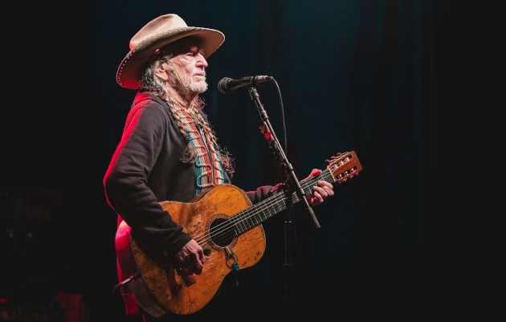

Longhorn Live Music
|
Longhorn Live Music is an informational hub for local Austin music and a tribute to the spirit of music as a whole. We serve to provide a resource for different aspects of the local Austin music scene and to inspire individuals in our community. Here you can find information on local shows and events, profiles on local artists and bands, and more! |
 |